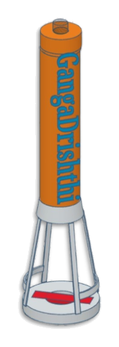
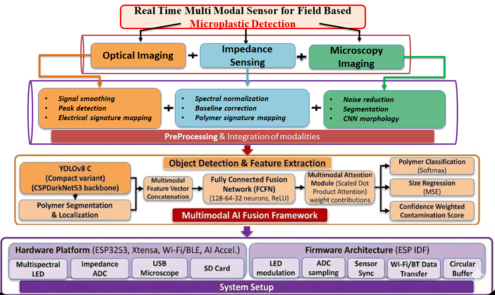
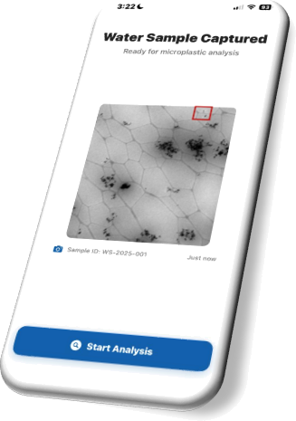
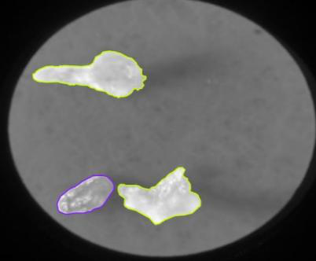
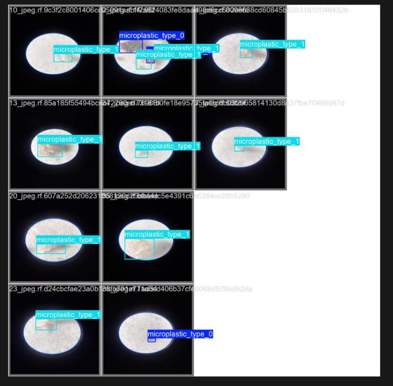
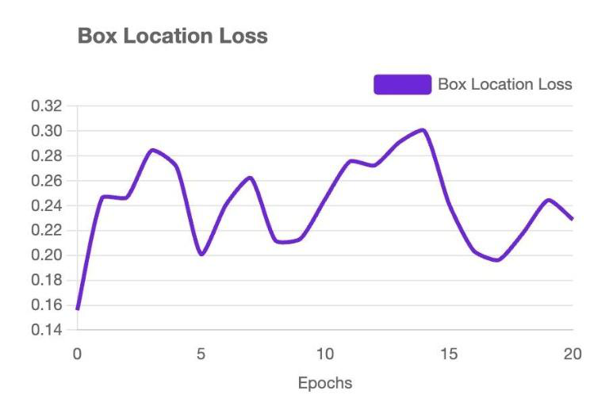
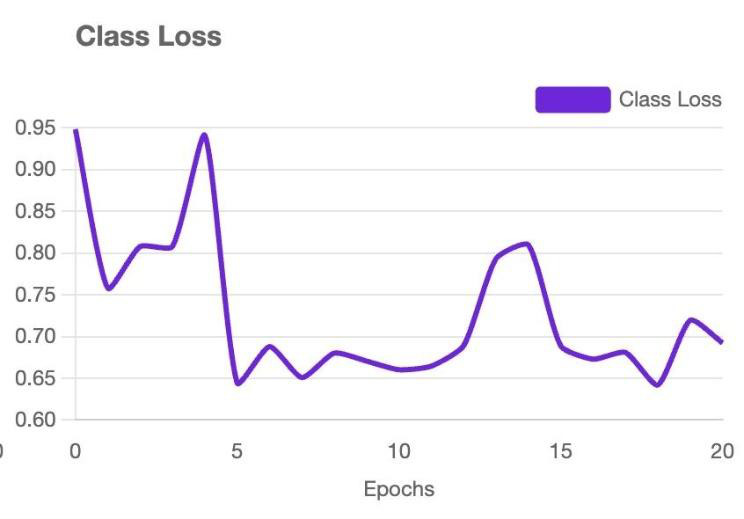
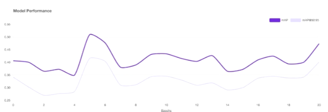
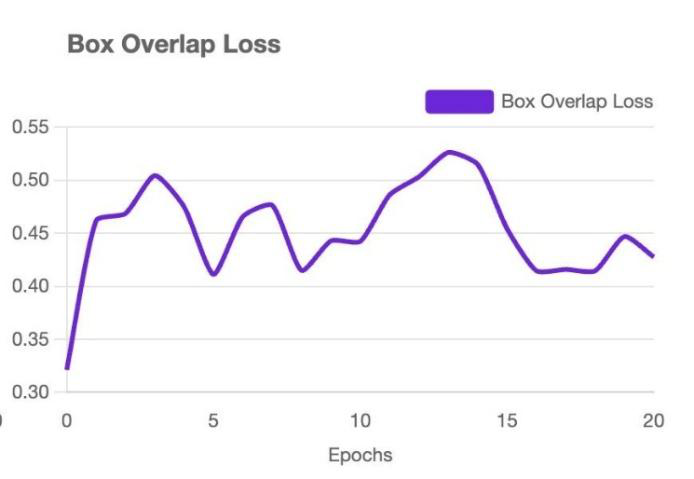

Real-time & on-device
Quantized ML models run at the edge on an ESP32-S3, delivering inference in under 200 ms per sample — no lab, no waiting.
GangaDrishthi is a compact, low-cost platform that fuses impedance spectroscopy, programmable multispectral optical imaging, and YOLOv8 deep-learning microscopy to deliver laboratory-grade microplastic detection directly in the field — at a fraction of the cost.

Microplastic pollution has emerged as one of the most concerning environmental issues of our time — minute plastic fragments smaller than 5 mm are now detected in oceans, freshwater systems, and even human tissue. Established detection methods such as FTIR and Raman spectroscopy are accurate but laboratory-bound, expensive, and too slow for real-time field monitoring.
GangaDrishthi integrates impedance sensing, programmable multispectral optical sensing, and machine-learning-augmented microscopy for rapid on-site microplastic quantification. Using a YOLOv8-based deep-learning pipeline, the system automatically identifies particle size and estimates polymer type in water samples. Results surface through a companion app that generates geo-tagged contamination heatmaps and a Microplastic Risk Index (MRI). Validated against standard FTIR/Raman data, it delivers laboratory-grade accuracy — empowering researchers and citizen scientists alike.
Moving environmental surveillance away from costly central laboratories toward an accessible, portable network makes large-scale tracking simpler and response faster.
Quantized ML models run at the edge on an ESP32-S3, delivering inference in under 200 ms per sample — no lab, no waiting.
Designed for minimal-power field operation with small microcontrollers, deployable even in resource-limited areas.
A companion app maps contamination hotspots and computes a Microplastic Risk Index to guide policy and action.
Multimodal fusion validated against FTIR / Raman benchmarks for reliable polymer identification and sizing.
A multimodal, field-deployable analytical platform for detection, classification, and risk assessment — fused by a machine-learning model and streamed to the cloud.
A programmable LED array sweeps 400–940 nm, capturing polymer-specific absorption and reflectance signatures through band-depth and intensity-ratio features.
Microfluidic electrodes record complex impedance |Z(f)| and phase across 1 kHz–2 MHz, capturing the distinct dielectric response of each polymer.
A 500× digital microscope yields high-resolution RGB particle images; segmentation extracts diameter, aspect ratio, circularity, and texture descriptors.

Feature vectors from YOLOv8 visual embeddings, impedance dielectric profiles, and optical reflectance patterns are concatenated and passed through a Fully Connected Fusion Network (FCFN) — a three-layer dense network (128–64–32, ReLU) optimized with Adam.
A scaled dot-product attention module adaptively weighs each modality's contribution, producing polymer classification (softmax), size regression, and a confidence-weighted contamination score.
An optically transparent microfluidic flow cell draws water into laminar flow, aligning optical, electrical, and microscopic views into a single sensing region.
Optical, impedance, and microscopy streams are timestamp-coordinated by the ESP32-S3 and combined into a single event record.
Gaussian denoising and watershed segmentation for imaging; Savitzky–Golay smoothing and PCA for impedance; Z-score / Min–Max feature normalization across modalities.
YOLOv8-C localizes and segments particles across PET, PP, PE, PS, and PVC classes; fused features drive classification, sizing, and contamination scoring.
An 8-bit quantized TFLite model runs on-device; geo-tagged results sync to the companion app for heatmaps and the Microplastic Risk Index.
The YOLOv8 pipeline localizes and classifies individual particles, while the companion app turns each capture into an actionable result in the field.



The system was evaluated across controlled laboratory tests and real-world field conditions, tracking training dynamics and detection quality over 20 epochs.




“The final metrics are stable, meaning the system is ready for practical deployment — efficient and reliable across varied real-world conditions.”
Preview the complete manuscript below, download the PDF, or view it on ResearchGate.
Your browser can't display the embedded PDF.
Open the paper ↗India
Computer Science & Engineering
Computer Science & Engineering
Electronics & Communication Engineering
Computer Science & Engineering
Computer Science & Engineering
Computer Science & Engineering